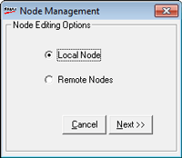

Node Registry maintains the details of all nodes that can be used to access Shoper database.
This option allows you to define the nodes from which Shoper database can be accessed or you can deny nodes from accessing Shoper database. The Nodes can be defined only by a supervisor.
Note: If node wise restrictions are enabled for any node, then the same has to be done for all the nodes which have access to Shoper 9 HO. If node wise restrictions are not required, it is suggested that the node registry is left empty without defining any node.
The process of Node Definition retrieves the information from the node it is invoked from. This option can be used in any given node only to include that node in the node registry or to modify the details of that node.
How to reach: Setup > Supervisory Functions > Node Management
The Login window is displayed to confirm the supervisor's login ID and password.
User ID: Enter supervisor’s login ID (Default is super).
Password: Enter supervisor’s password (Default is nothing).
The Registry Login window is displayed.

Local Node: Select to add, modify or delete a node registry.
Remote Nodes: Select to dissociate any of the client nodes while you are working in a multi-user environment.
The next step of the node management process depends on your selection of